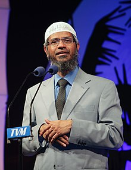

Zakir Abdul Karim Naik

Bill Gates
3 things you need to know aboutZakir Abdul Karim Naik
- Zakir Abdul Karim Naik (born 18 October 1965) is an Indian Islamic televangelist and preacher
- Naik is renowned as a non-Arabic scholar, public orator,
- held the positions of chairman, chief executive officer (CEO), president and chief software architect